A pack of colorful construction paper is one of the most versatile craft supplies you can keep in the house. Whenever you are looking for a quick activity, a rainy afternoon project, or a sweet moment with your little ones, easy crafts using construction paper are always the answer. No special skills required, no big shopping trip needed. Just grab the paper, scissors, and glue, and you are ready to go. 🎨
This list rounds up 20 simple, beginner-friendly ideas your kids will genuinely love. Each one is designed to be low-mess, easy to set up, and satisfying to finish, whether your child is two or ten.
What You'll Need
Most of these easy construction paper crafts use the same basic supplies, so one good prep session covers almost everything on the list.
- Crayola Construction Paper, 96 Sheets, a great multi-color pack with all the classic shades kids love
- Elmer's Disappearing Purple Glue Sticks, goes on purple so kids can see where they glued, dries clear and clean
- Fiskars 5" Blunt-Tip Scissors for Kids, safe blunt tip, easy grip, perfect for small hands
- Crayola Ultra Clean Washable Markers, great for adding faces, details, and color accents
- Pencil, for tracing shapes before cutting
- Ruler, helpful for straight strips and measured pieces
20 Easy Construction Paper Craft Ideas
1. Paper Chain Garland
This classic is a favorite for good reason. Cut construction paper into strips, loop each one into a ring, and link them together into a long colorful chain. Kids can make their chain as long as they like, and the repetitive looping motion is wonderfully calming. Hang it as a room decoration or drape it across a window for an instant burst of color.
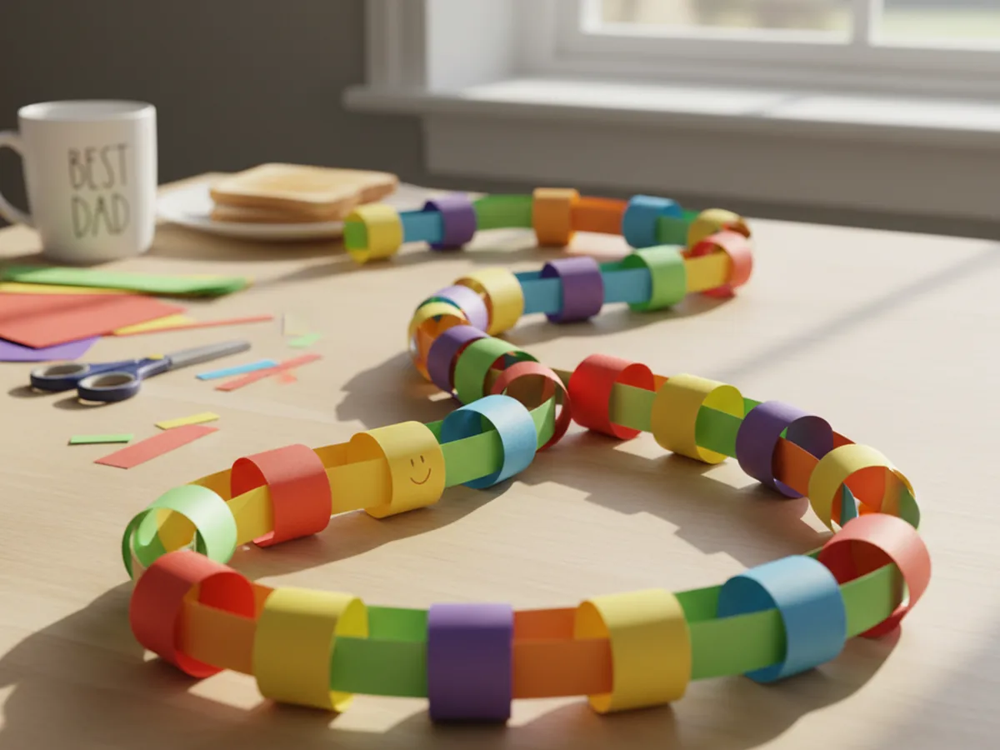
2. Construction Paper Crown
Every child deserves a crown, and this one takes about ten minutes to make. Cut a wide strip of paper, cut a zigzag or pointed edge along the top, fit it to your child's head, and decorate with markers, sticker gems, or small paper shapes. This is one of those easy crafts using construction paper that instantly becomes part of dress-up play.
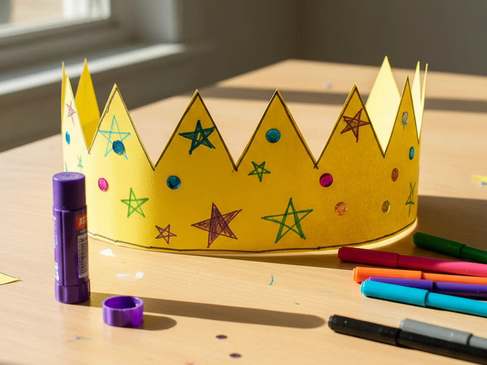
3. Paper Butterfly
Fold a sheet of construction paper accordion-style, pinch it in the middle, secure with a small paper strip or twist tie, and fan out both sides to form wings. Let your child decorate the wings with markers or punch holes to make a pattern. Simple, beautiful, and completely satisfying to make.
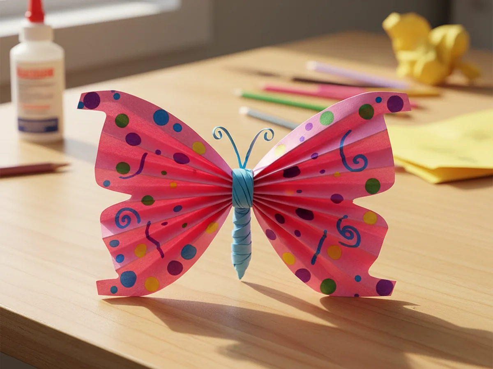
4. Construction Paper Rainbow
Cut strips of red, orange, yellow, green, blue, and purple paper and glue them in arc shapes onto a white background, stacking them to form a rainbow. Add white cotton ball clouds at each end for extra charm. This is a cheerful construction paper craft for toddlers that looks wonderful on any wall or refrigerator.
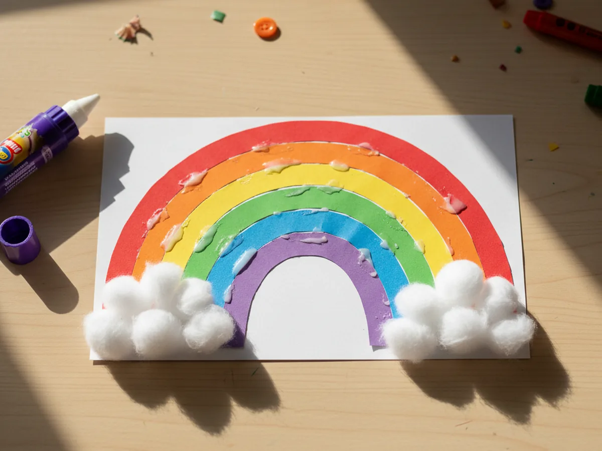
5. Paper Flower Bouquet
Stack two or three squares of different colored paper, fold them together into a fan, pinch the middle, and fan out to form a flower. Glue each flower onto a green paper stem and gather several into a bouquet. Kids love giving these to grandparents or displaying them in a paper cup vase on the windowsill.
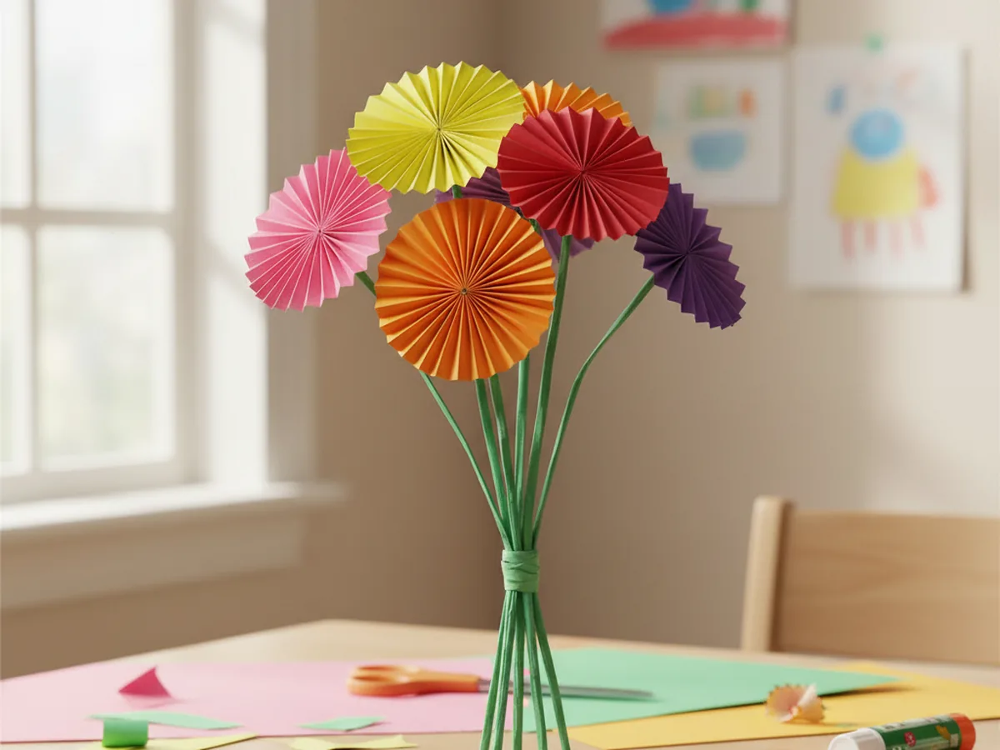
6. Paper Caterpillar
Cut circles from several different colors of construction paper, glue them overlapping in a long line for the body, and add a round head with marker eyes and a big smile. You can even add accordion-folded antennae and tiny paper legs. Little ones absolutely love making this friendly little bug, and older kids enjoy experimenting with longer and more colorful caterpillars.
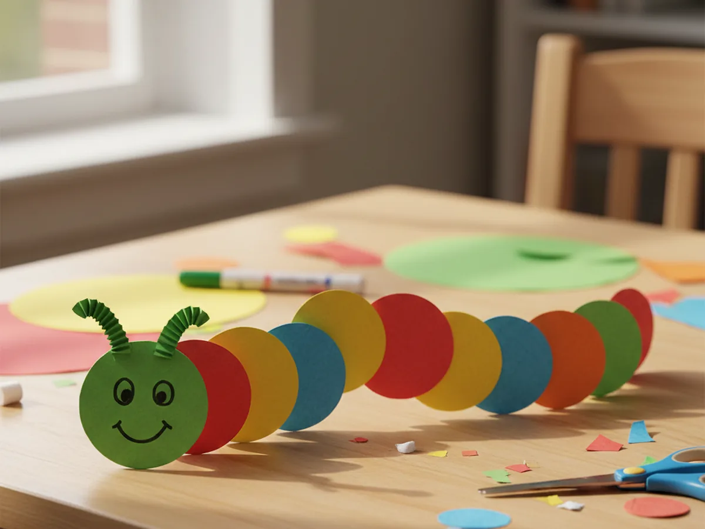
7. Paper Turtle
Cut a large oval for the shell from green paper, a smaller oval for the head, and four small leg shapes. Layer and glue them together, then let your child draw a pattern on the shell with markers. This is one of the sweetest easy crafts using construction paper for animal-loving kids, and the finished turtle looks adorable sitting on a shelf.
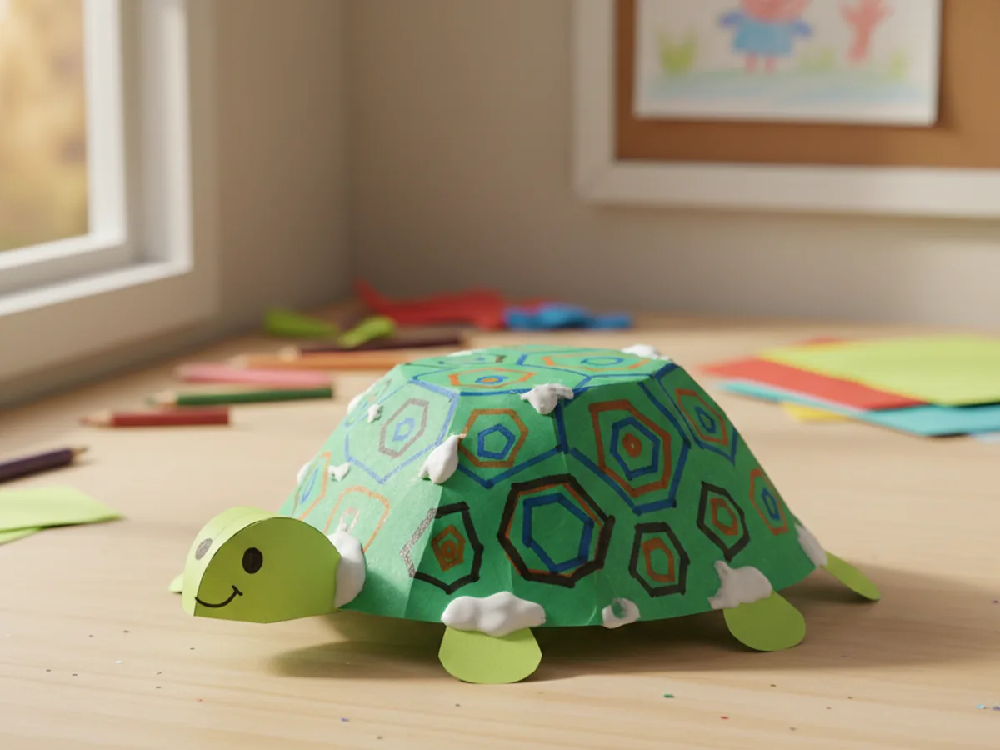
8. Paper Kite
Draw a diamond shape on a bright piece of paper, cut it out, add a curvy paper tail made from a twisted strip, and decorate with markers or small paper shapes. Tape a string to the top for display. Kids love making their kites look as colorful and wild as possible. This one works beautifully as a spring or summer room decoration too.
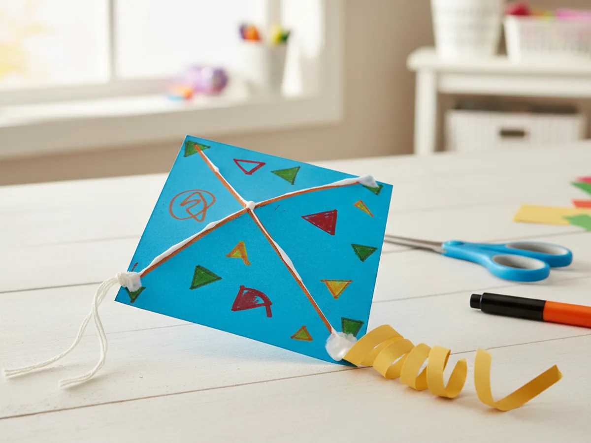
9. Paper Snail
Roll a long strip of construction paper into a tight coil for the shell, then glue it onto a wider paper body shape. Add two tiny strip antennae and a friendly marker face. The rolling step is a wonderful fine motor activity for little fingers, and the finished snail has a satisfying 3D look that kids are proud to display. 🐌
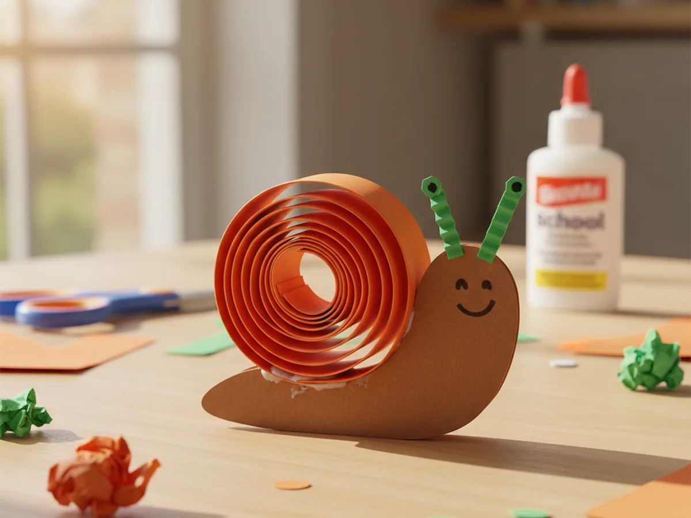
10. Paper Sun with Rays
Cut a large circle from yellow paper for the sun, then cut several long narrow triangles or strips for the rays and glue them around the edge. Kids can use orange, yellow, or even golden paper and draw a smiley face in the center. This one goes beautifully on a window or any wall that needs a little brightness.
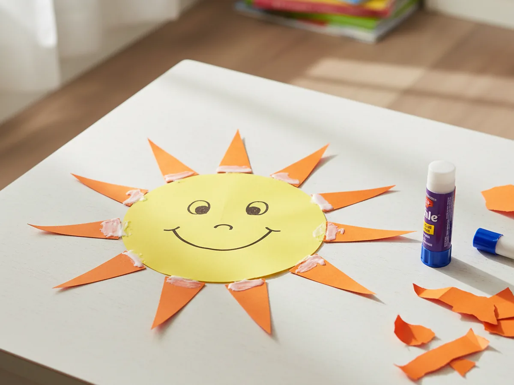
11. Paper Bird
Cut out a simple bird body from one color, add a triangle beak, a small wing, and a tail, then glue them together and add a marker eye. You can make a whole flock using different colored papers. This is a gentle, low-prep simple construction paper craft that even toddlers can join with just the gluing and decorating steps.
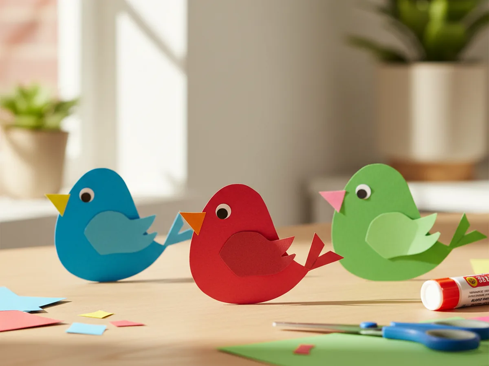
12. Paper Rocket Ship
Roll a rectangle of paper into a cylinder, tape it closed, cut three triangular fins from a contrasting color, and attach a cone-shaped nose. Glue on colorful flame strips at the bottom for the rocket blast. Kids love the 3D result, and this project doubles as a great imaginative play prop once finished.
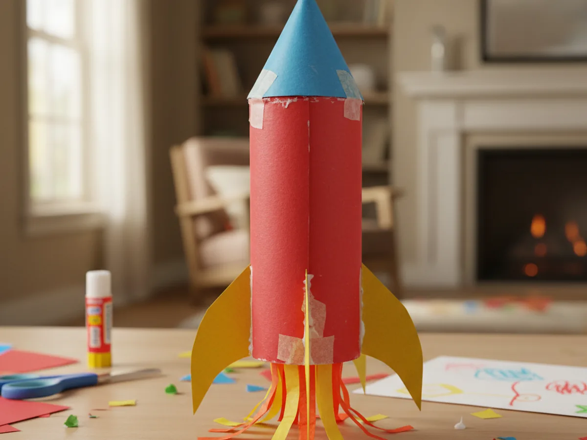
13. Paper Pinwheel
Cut a square of paper, draw diagonal lines from each corner nearly to the center, fold every other point to the middle, and pin it onto a pencil eraser or straw. When your child blows on it or runs with it, it spins. This is one of the most magical easy construction paper crafts because the finished product actually does something fun.
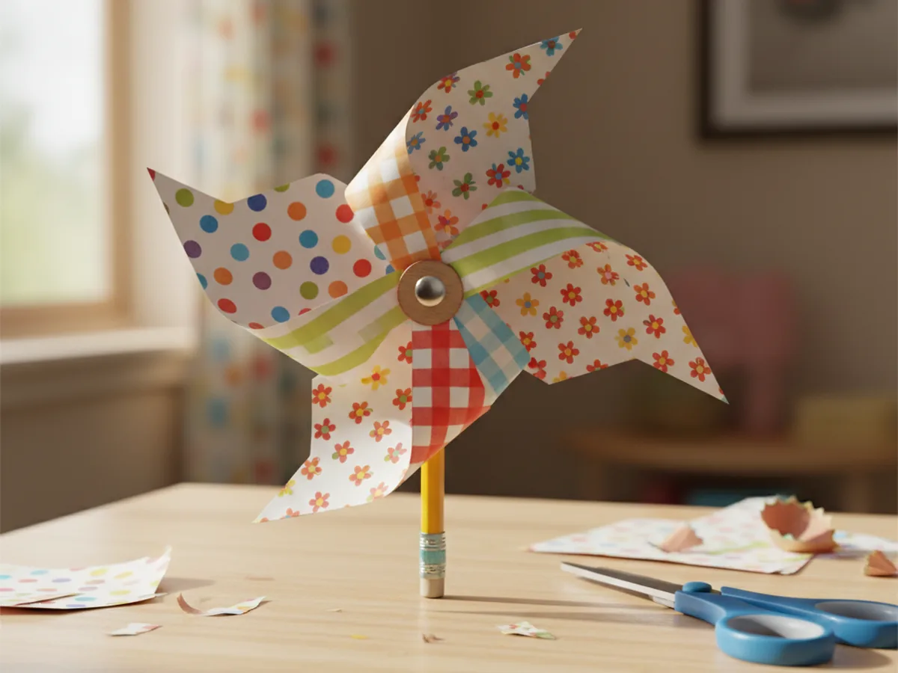
14. Paper Lantern
Fold a rectangle of paper in half lengthwise, cut slits from the folded edge toward the open edge, unfold, and roll into a tube to reveal the slit pattern. Attach a paper handle at the top. These look beautiful hanging in a window or strung together as a garland, and older kids can make a whole row in different colors.
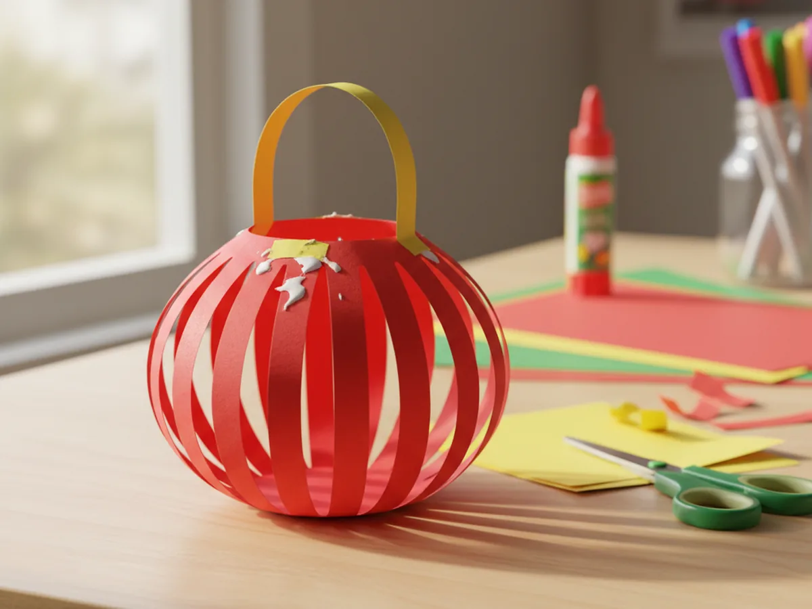
15. Monster Corner Bookmark
Fold a square of paper diagonally, fold the two side corners to meet the top point, and tuck the top flap over them to create a pocket. Slip it over the corner of any book page and decorate with monster eyes, teeth, and horns using paper scraps and markers. Kids adore making these, and they actually use them, which is a wonderful bonus.
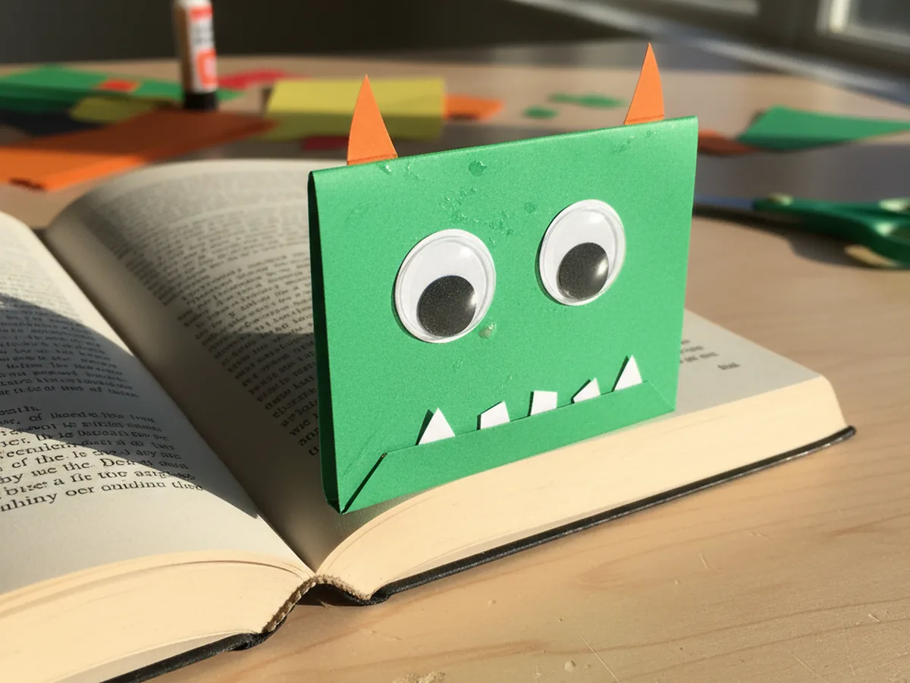
16. Paper House Scene
Use a large piece of light blue paper as the sky background. Cut out a house shape, a sun, some clouds, trees, and flowers from different colors, and arrange and glue them into a full outdoor scene. This open-ended project works for all ages, as toddlers can manage the gluing while older kids can cut and plan the whole composition themselves.
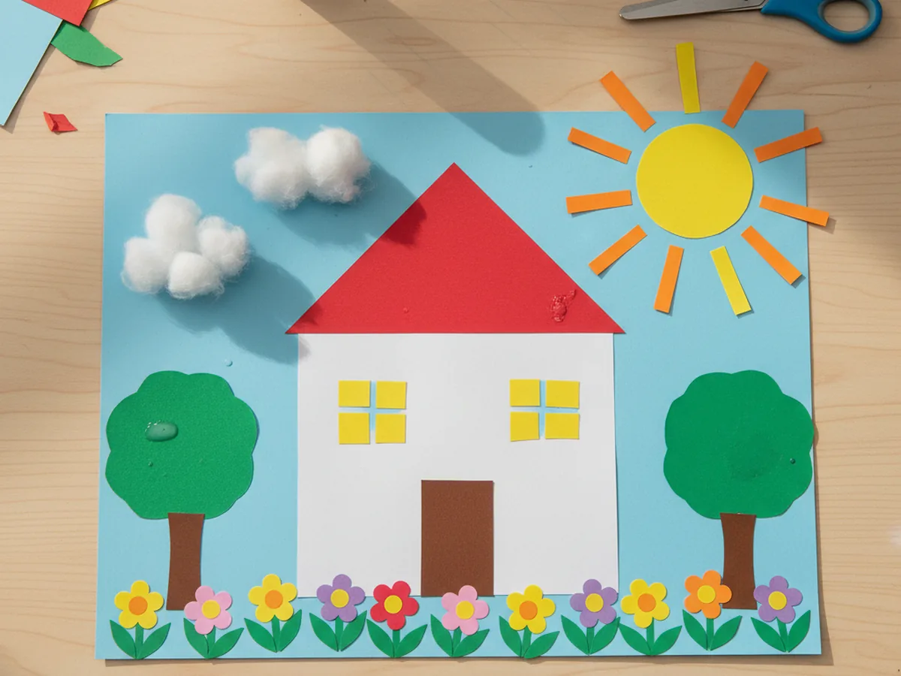
17. Paper Tree
Stack three green triangles of decreasing size and glue them in tiers on a brown paper trunk to make a layered tree. Kids can decorate it with small paper circles for ornaments or leave it plain for a nature scene. This is a lovely all-seasons craft since the tree can be decorated differently for spring blossoms, fall leaves, or a Christmas tree look.
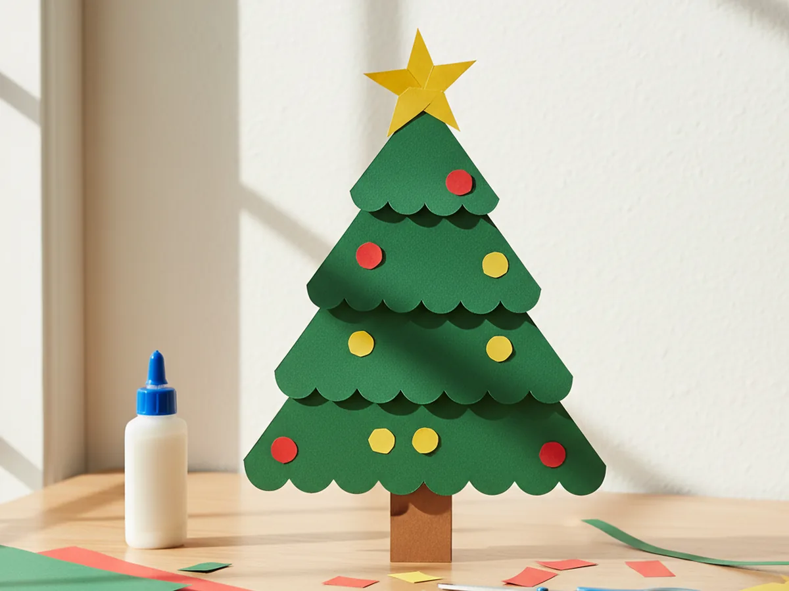
18. Paper Fish
Cut a large oval for the fish body from a bright color, add a triangle tail, small circle eye, and use overlapping small paper circles or curved strips to create scales. The result looks like a cheerful fish that could swim right off the page. This is a great easy craft using construction paper for an ocean or underwater theme activity day.
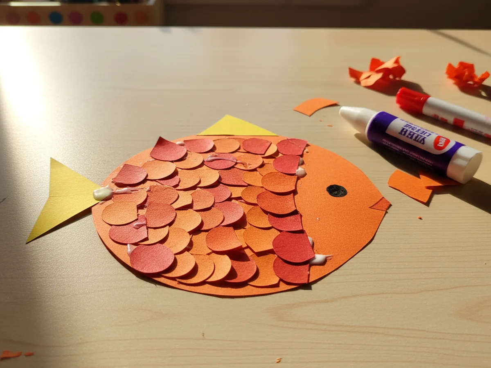
19. Paper Heart Wreath
Cut out many hearts from different colors of construction paper, fold each one slightly, and glue them in a circle on a ring base cut from cardstock to form a wreath shape. The result is a sweet, colorful display piece that works year-round and makes a lovely handmade gift. Kids love choosing the colors and arranging them in patterns. 💕
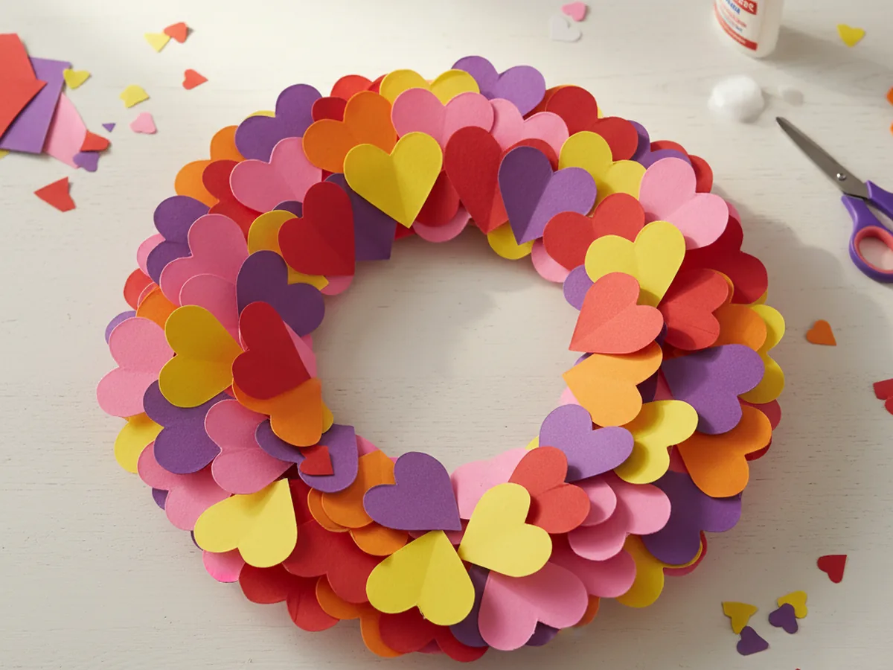
20. Torn Paper Mosaic
Draw a simple bold shape on white paper (a sun, an apple, a heart, or a rainbow) and let your child tear small pieces of colorful construction paper and glue them inside the lines to fill in the shape. Tearing paper instead of cutting is wonderful for little hands and creates a beautiful textured look. This is one of those projects where the process itself is as joyful as the finished piece.
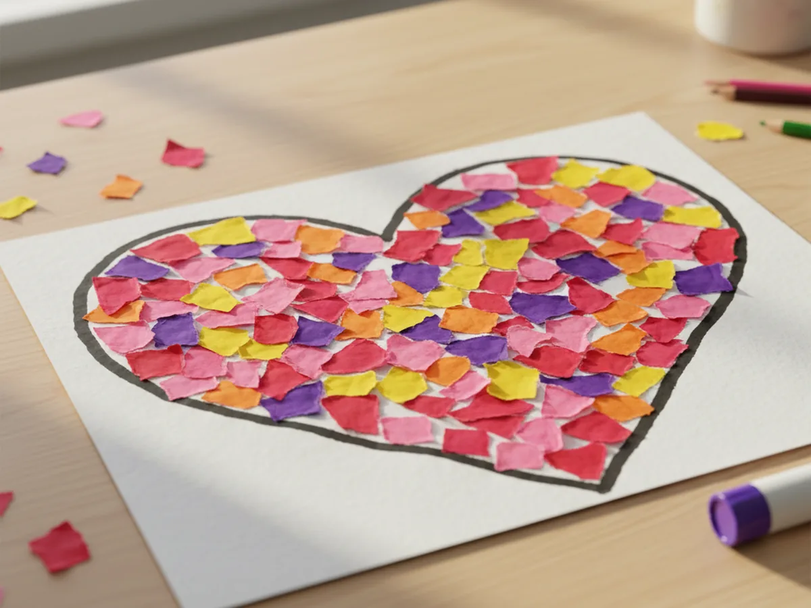
Final Thoughts
Construction paper really is one of the best craft supplies around. It is inexpensive, forgiving, endlessly versatile, and every one of these easy crafts using construction paper results in something your child will feel genuinely proud of. Whether you make one idea this afternoon or work through the whole list over the coming weeks, these projects are sure to bring some happy, hands-on moments to your day. Enjoy every colorful, gluey, wonderful minute of it.
More Crafts You'll Love
If your family loves crafting with paper, these articles are full of even more ideas to try.
Grab those scissors and enjoy your next crafty session together!